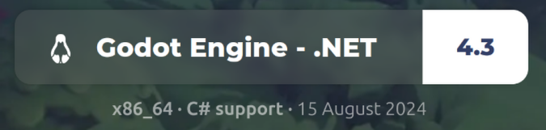
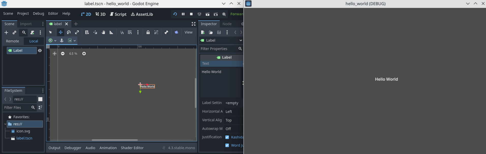

Introduction to Godot
a. Set up Godot with C#
The first step is to download the Godot editor and install the .NET SDK. .NET is needed for connecting to the RabbitMQ messaging service in the next part.
Navigate to the Godot Engine page and download the latest version with C# support. You must also install the .NET SDK for your system.
b. Read Intro Documentation
Read the following short pages of the Godot documentation. This will introduce you to the Godot editor, but don't worry if you don't understand everything.c. Create the "Hello World" project
Follow the tutorial at https://docs.godotengine.org/en/stable/getting_started/step_by_step/nodes_and_scenes.html to develop the "Hello World" project.
